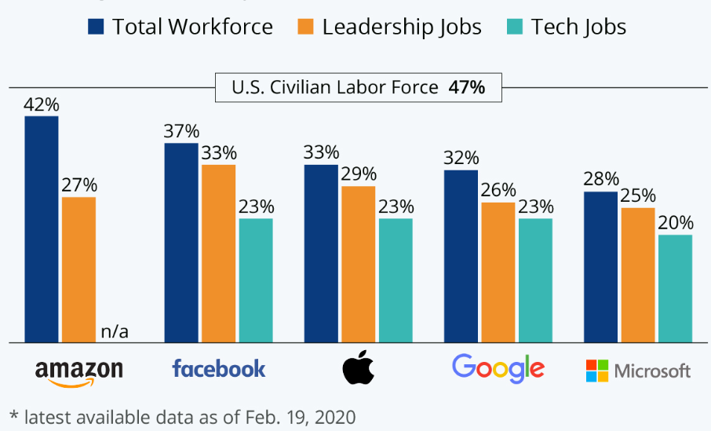
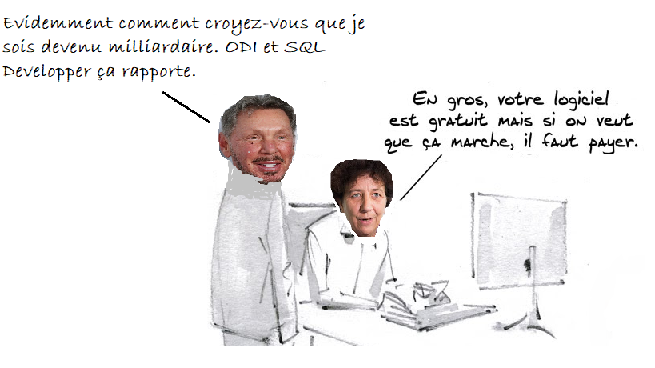
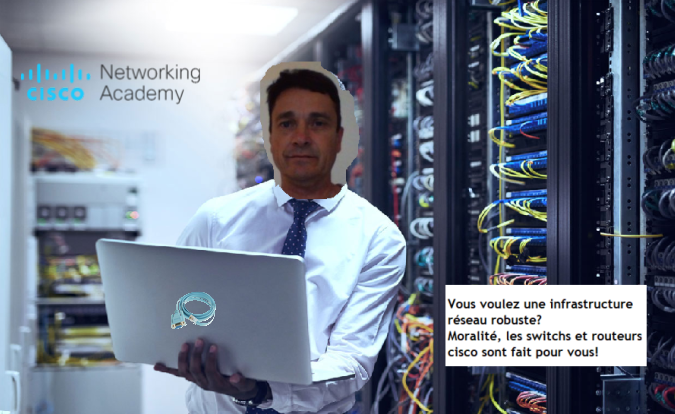

Etat des lieux de la diversité dans le monde de l’informatique : pas aussi “open” que la source ?
Dans une situation sociale où l’on tend à faire en sorte que l’écart homme-femme disparaisse dans le monde professionnel, cet idéal n’est pas encore atteint partout. Chez Stud’INFO, nous avons décidé de chercher à comprendre la situation actuelle de la diversité dans le monde de l’informatique, en observant son avancement et en essayant de comprendre la cause de celui-ci afin de pouvoir finalement montrer la réelle importance de la diversité dans le domaine de l’informatique.
Essayons donc, dans un premier temps, de voir où nous en sommes dans le combat pour l’inclusion et la diversité dans le monde de l’informatique et des nouvelles technologies.
L’état de la diversité dans monde de l’informatique.
Bien que certaines grandes entreprises affichent une diversité impressionnante dans des vidéos promotionnelles, ou que certaines écoles en informatique se ventent d’atteindre jusqu’à 40% d’étudiantes, cette communication vendant du rêve cache une réalité bien moins réjouissante, et ce à tous les niveaux.
Aux Etats-Unis par exemple, en 2016, seulement 19% des diplômes équivalents à la licence étaient remis à des femmes, alors que ce chiffre était de 27% en 1997 ! Et cela n’est pas faute de réussite de leur part, la proportion de masters obtenus par le sexe féminin ayant passée de 28 à 31% au même moment.
Dans le monde professionnel, la situation n’est pas plus encourageante : seulement 5% des positions de leadership dans l’informatique sont occupées par des femmes en Grande Bretagne, selon l’étude de WISE. Qu’en est-il des grandes entreprises de l’informatique affichant la diversité comme une de leurs valeurs clé ? L’expert en la matière est Google, l’affichant dans toute vidéo de communication, à ses divers évènements et sur sa page de recrutement. Facebook, Apple, Amazon et Microsoft ont, eux aussi, une démarche très semblable. Bien qu’Amazon soit l’entreprise des GAFAM se rapprochant le plus de la parité, avec 42% d’employés féminins en février 2020, seulement 27% de ses postes de leadership y sont occupés par des femmes. On observe chez Google des chiffres moins exemplaires : 32% de femmes, 26% des postes de leadership et seulement 23% des postes en informatique occupés par la gente féminine.
Image & statistiques de Statista. *Total workforce = effectif de travail total (bleu), Leadership jobs = métiers d'encadrement (orange), Tech jobs = métiers de l'informatique (turquoise)
Chez Stud’INFO, ces chiffres ne nous ont pas satisfait. Comment peut-on expliquer un tel écart ? Pourquoi le monde de l’informatique est-il si peu diversifié ?
Les possibles raisons du manque de diversité dans l’informatique.
Nous nous sommes penché sur trois causes potentielles pour le manque de diversité observé.
Tout d’abord, il y a les stéréotypes de genre. Dès un très jeune âge, l’omniprésence du stéréotype des “garçons étant meilleurs en sciences“ peut empêcher certaines femmes d’étudier des sciences, dont l’informatique. Cela peut d’ailleurs rendre des études dans l’informatique encore plus intimidantes pour une femme, ne s’y sentant pas à sa place alors qu’elle y est tout à fait légitime.
Ce premier facteur en engendre notre seconde cause potentielle : un marché des talents restreint. Comme les statistiques montrent que la proportion de femmes faisant des études dans l’informatique est bien moindre à celle des hommes, il est naturel que les employeurs aient un biais les menant à recruter plus d’hommes : la piscine de talents en informatique disponible pour un recruteur comporte plus de choix masculins, et il est donc plus probable qu’un homme remplisse les critères recherchés par le recruteur dans une telle situation.
Enfin, il y a le favoritisme de groupe : les sociologues ont, depuis longtemps, constaté que les managers ont tendance à recruter quelqu’un qui leur ressemble bien plus facilement. Il est donc très simple de comprendre comment, au sein d’un groupe d’informaticiens majoritairement de sexe masculin, surtout dans des positions de management à l’heure actuelle, la tendance est difficile à inverser : un groupe d’amis masculin fondant sa startup recrutera d’autres hommes pour agrandir son entreprise.
Mais pourtant, l’équipe de Stud’INFO est persuadée que rendre le monde de l’informatique plus diversifié est primordial pour l’avenir.
L’importance de la diversité dans le domaine de l’informatique.
Certains se demandent pourquoi cette diversité est si importante dans l’informatique, alors que la situation semble bien fonctionner aujourd’hui. Si vous lisez ce magazine, vous êtes probablement persuadés du fait que l’informaticien construit le monde de demain, en résolvant les problèmes qu’il observe. Or,
Nous ne voyons pas le monde tel qu’il est mais tels que nous sommes.
écrivait Emmanuel Kant.
Avec des informaticiens uniquement masculins, comment voulez-vous régler tous les problèmes de demain, là où 47% de la population est féminine ? Plus l’univers de l’informatique sera composé de personnes diverses, plus il aura d’influence positive sur le monde et plus votre travail sera utile. Le monde de l’informatique a besoin de visions plus variées pour devenir plus inclusif et pour créer des solutions plus utiles à tous et plus humaines.
De plus, si cela ne suffit pas à vous persuader de l’importance de la diversité dans l’informatique, sachez qu’une équipe d’employés en informatique plus diverse bénéficie grandement à l’entreprise. Par exemple, des chercheurs de l’université de Castilla la Mancha, en Espagne, ont constaté que des équipes de recherche et développement respectant la parité homme-femme se dévoilent bien plus créatives et innovantes et prennent de meilleures décisions. Certaines entreprises ont bien compris cette importance, et ne s’arrêtent pas à la diversité des genres : Dell par exemple, se bat aussi pour la neurodiversité, en prenant le temps de célébrer ses divers employés se trouvant sur le spectre de l’autisme. L’entreprise affirme avoir amélioré la qualité de son département de recherche d’une manière impressionnante en prenant le temps d’apprécier et de valoriser la diversité de chacun.
Enfin, avec la demande croissante de talents en informatique, nous ne pouvons aujourd’hui plus accepter de favoriser les hommes : la France a besoin de beaucoup de talents du numérique, et a besoin que les femmes aussi se forment à l’informatique pour répondre à cette demande.
Conclusion
Au travers de cet article, nous espérons que vous aurez compris une chose : la diversité, des genres mais pas que, dans l’informatique, est un combat loin d’être terminé et que nous avons tous à mener pour réussir à changer la donne. Et pour cela, nous avons besoin de votre implication, en tant qu’étudiants en informatique et futurs professionnels du milieu, sur deux fronts.Tout d’abord, nous devons nous battre pour libérer et donner de la place aux personnes, féminines ou faisant partie d’une minorité, dans l’informatique. Se sentant souvent oppressées ou peu à leur place, elles ne peuvent pleinement s’épanouir et se réaliser et n’atteignent ainsi pas leur plein potentiel.
Mais nous devons aussi et surtout créer un environnement plus sain pour que la diversité puisse se développer dans l’informatique : c’est en créant un environnement plus accueillant, en étant sans jugement et et plus ouverts d’esprit, que les personnes ne se sentant pas à leur place dans l’informatique ou pensant qu’elles ne peuvent pas s’y intégrer pourront pleinement s’y réaliser et petit à petit construire un monde de l’informatique plus diversifié, plus humain et vraiment prêt à construire le monde de demain.
Citation sur sujet
Etre une femme dans une équipe constituée d’hommes veut dire que vous allez avoir une voix unique. Il est important d’accepter cela.
Portrait de Lina Zouiri, une femme en informatique
La motivation, la clé de la réussite
Des passions et centres d’intérêt qui paraissent en contradiction avec sa personne étudiante, Lina Zouiri, en deuxième année de DUT Informatique à l'IUT de Lyon, est le parfait exemple que peu importe nos centres d’intérêt et peu importe qui on est, avec la volonté de réussir, rien n’est inatteignable.
Mon entourage est souvent surpris par mon choix de parcours.
Consciente des préjugés toujours présents dans ce domaine majoritairement masculin, pour Lina, c’est loin d’être un problème. Au contraire, c’est quelque chose qui lui plaît. Contrairement à ses camarades de classe, à la sortie de son baccalauréat scientifique elle n’a pas voulu diriger ses études vers ses passions quotidiennes : mode, luxe, beauté, tout ceci n’est que secondaire et loin d’être nécessaire pour réussir. Étant de nature réaliste, elle a conclu que suivre ses passions serait un frein à son aboutissement professionnel rêvé car elle ne possède pas les acquis et qualités nécessaires (comme la créativité par exemple) pour pouvoir se démarquer.
Le plus important, selon elle, est de pouvoir s’assurer un avenir prometteur et honorable. Pour cela, il lui fallait trouver un parcours qui propose de nombreux débouchés et avec des salaires convenables, qui lui permettrait de découvrir de nouveaux horizons. C’est ainsi que l’informatique, un monde parallèle de son quotidien de jeune femme à l’affût des dernières tendances en vogue, entre en jeu.
L’informatique est apparue comme une évidence pour moi, c’est le futur et le seul métier qui peut me garantir d’avoir l’avenir que je souhaite.
Avec les encouragements de ses parents qui l’ont poussé à confirmer son choix, Lina s’est retrouvée à la rentrée qui suit dans le DUT Informatique de Lyon 1. Une grande fierté pour elle, puisque l’IUT de Lyon est réputé pour son excellence technologique.
Pourtant, cette rentrée était loin d’être réussite. Les préjugés auxquels elle n’accordait pas forcément importance s’avèrent vrais. Faisant partie des 10 filles sur 150 étudiants en informatique, elle ne se sentait pas à sa place. La découverte de l’informatique n’a pas également pas été une partie plaisante. Ayant aucune connaissance dans ce domaine, elle compare les débuts de ses programmes à du « chinois ». Sans soutien de la part de ses autres camarades, eux, passionné par l’informatique, Lina a hésité plusieurs fois à arrêter ses études. Et c’est d’ailleurs ainsi que la voyaient les autres étudiants, une fille comme elle ne peut pas réussir dans l’informatique.
Cette phase difficile s’est avéré être un facteur de motivation : réussir pour casser les clichés, réussir pour prouver que lorsqu’on souhaite quelque chose, du plus profond de notre cœur rien n’est impossible. Steve Jobs, un des fondateurs d’Apple, est pour elle un modèle dont elle envie la réussite. Selon Lina, avoir un ou des modèles de réussite dans un cadre où l’on souhaite travailler plus tard ne peuvent être que bénéfique. C’est une petite source de motivation qui nous pousse à poursuivre et atteindre le meilleur de nous-même.
Au final, notre étudiante ne regrette pas son choix et dit même que ce DUT est la meilleure décision qu’elle ait pu prendre. Après détermination, persévérance et obstination, Lina se voit aujourd’hui comme future ingénieure en cybersécurité. Un choix qui n’est pas anodin avoue-t-elle :
Depuis mon adolescence, j’adore regarder des films en lien avec la cybersécurité comme Matrix Reloaded par exemple. Je me suis toujours dit que c’est quelque chose que je pourrai faire, mais je n’y prêtais pas plus d’attention. Aujourd’hui, je pense que ça a un peu influencé dans mes choix.
La cybersécurité est encore plus un « monde masculin » que l'informatique en général selon elle. Encore une fois, casser les codes est quelque chose qui lui plaît, réussir dans ce domaine serait une grande fierté. De plus, Lina prend plus cela pour un avantage qu’un défaut. Les temps changent et chaque domaine et entreprise veut se sortir de cette image machiste, et avec sa motivation qui la suit de près, elle est certaine de pouvoir atteindre cet avenir professionnel tant espérer. Ayant Reçu des réponses favorables de différentes écoles d’ingénieurs prestigieuses, Lina veut prouver aujourd’hui que peu importe nos centres d’intérêt, peu importe l’image qu’on peut avoir de nous, le plus important reste notre volonté de réussite, et personne ne pourra la freiner.
La caricature du mois

La question de lecteur du mois
Ce mois-ci, c’est la question de Lucas, un élève de l’ESILV âgé de 20 ans, qui a été sélectionnée :
Comment je peux m’impliquer pour la diversité dans l’informatique ?
Bonjour Lucas.
Tout d’abord, tu as fait le plus difficile : prendre conscience du problème et vouloir agir pour contribuer à sa
résolution.
Pour aider à rendre le monde de l’informatique plus inclusif et diversifié, cela se passe vraiment au niveau de ta vie quotidienne avant tout : que ce soit dans ton école, dans l’entreprise où tu travailleras ou encore à des conférences, l’idée est de communiquer sur la situation et de rendre le plus de personnes de l’univers de l’informatique conscientes du problème. Plus les gens seront conscients du problème, plus ils agiront et changeront ce qu’il faut changer. N’hésite donc pas à faire tourner le mot et à mobiliser les autres, et pourquoi pas les rediriger vers cette édition de Stud’INFO !
Tu peux aussi agir dans différentes organisations : tu peux t’impliquer dans des associations - tu en pourras chercher de l’inspiration pour cela dans le dernier article de cette édition - ou encore participer à des évènements promouvant les sciences dans les collèges et lycées. Si tu as un peu de temps à donner, pourquoi ne pas passer dans ton ancien lycée et y présenter le monde de l’informatique ?
Dans tous les cas, le plus important reste d’une part de montrer aux jeunes qu’ils ont leur place dans l’informatique, qui qu’ils soient, et d’autre part de donner envie à tous, particulièrement les minorités moins intégrées dans le monde de l’informatique, de s’impliquer dans le numérique. Pour cela : communique, fais découvrir ce que tu aimes de l’informatique aux gens autour de toi et continue à être dans cette bonne dynamique qui t’a poussé à poser cette question !
- L’équipe Stud’INFO.
Citation sur le sujet
Je pense qu’il est très important d’avoir plus de femmes en informatique. Mon slogan est : ”l’informatique est bien trop importante pour être laissée aux hommes”.
La vidéo sur le sujet de cette édition
Pour cette édition, les élèves du département informatique de l’IUT Lyon 1 nous ont transmis une vidéo qui a été réalisée avec certains de leurs enseignants. Celle-ci a pour objectif de donner envie aux minorités de se lancer dans l’informatique en montrant que chacun y a sa place et que la diversité y est importante.
N’hésitez pas à partager cette vidéo pour rendre plus de personnes conscientes de cette problématique, et envoyez-nous vos vidéos sur ce sujet à videos@studinfo.fr pour peut-être apparaître sur notre webzine.
A Lyon, il y a de l’espoir : ces informaticiens qui se battent pour la diversité.
Bien que l’on puisse reprocher un manque de diversité et d’inclusion à l’univers de l’informatique, certains lyonnais réalisent que le constater n’est pas suffisant : ils agissent. Pour vous inspirer et éventuellement vous donner des pistes afin de vous aussi, vous impliquer et agir, nous tenions à vous présenter quelques uns de ces acteurs se battant pour une communauté informatique plus diverse.
La fondation Blaise Pascal, située à Villeurbanne, est un acteur admirable du combat pour la diversité dans l’informatique et les mathématiques. Il s’agit d’une fondation nationale qui veut promouvoir, développer et soutenir les actions de médiation scientifique en mathématiques et informatique à destination de tout citoyen. Leur combat est majoritairement orienté vers les femmes ainsi que les jeunes défavorisés socialement ou géographiquement, bien trop exclus de l’univers de l’informatique, et souvent par manque d’information. C’est pour cette raison que la fondation a pour ambition de changer la perception des mathématiques et de l’informatique en donnant envie aux jeunes d’investir ces connaissances fondamentales. La fondation soutient de nombreux projets visant à soutenir la diversité dans l’informatique, à Lyon et au niveau national. Elle possède aussi un compte twitter très actif, où vous pourrez être notifié de tous les évènements concernant ce sujet, soit pour y participer, soit pour vous engager et les aider. Si vous voulez en apprendre plus sur cet acteur très actif dans le bassin lyonnais ou même les soutenir, cela se passe ici ou sur leur twitter, @FondBPascal.
Bien que nous n’ayons pas la place ici de citer toutes les associations lyonnaises se battant pour la diversité dans
l’informatique - ce qui est très bon signe ! - il nous tenait aussi à coeur d’évoquer la Maison des Mathématiques et de
l’Informatique (MMI). Cette structure lyonnaise, en plus de ses nombreux évènements visant à démocratiser l’intégration
de tous aux mathématiques et à l’informatique, organise maintenant depuis 2016, chaque année, des journées dédiées aux
lycéennes, dans le but de les encourager à s’orienter vers des études scientifiques : Les Journées Filles mathématiques
et informatique, une équation lumineuse, en partenariat avec les associations femmes et mathématiques et Animath. Ces
journées destinées aux lycéennes de première et de terminale découlent de la volonté de la MMI de lutter contre les
stéréotypes persistant encore à l’heure actuelle et de pousser les filles à plus s’engager dans des filières
scientifiques. Chez STUD’Info, nous soutenons ce temps de liberté accordé aux filles pour leur permettre de réfléchir
sereinement à leur avenir et de parler plus librement, car nous pensons qu’il peut réellement faire une différence.
Plus d'informations sur :
https://filles-info-19.sciencesconf.org/
Vous l’aurez compris : si la situation actuelle de la diversité de l’informatique n’est pas satisfaisant, l’unique
solution est d’agir. Ces acteurs l’ont bien compris, ainsi que de nombreux autres acteurs de l’informatique lyonnais. Ce
mouvement est admirable et ne deviendra que plus important à l’avenir : c’est pour cela que nous ne pouvons que vous
inciter à vous engager et à soutenir cette cause, que ce soit en soutenant de telles associations ou en agissant dans
votre structure, ne serait-ce qu’en sensibilisant votre entourage à ce sujet. Amis lyonnais, si vous souhaitez vous
inscrire dans cette démarche, le moment est idéal : pour faire un premier pas, vous pouvez participer aux différents
ateliers organisés à Lyon dans le cadre de la quinzaine “Numérique, en avant toutes” centrée sur l’intégration de la
femme dans l’univers du numérique. Vous retrouverez le programme
ici.
Engagez-vous !
La pub du mois

Questionnaire sur cette édition pour les lecteurs
Chers lecteurs,
Comme d'habitude chez Stud'INFO, nous voulons interagir avec vous.
Tout d'abord, pour faire de Stud'INFO un magazine qui répond à vos attentes, dîtes nous ce que vous avez pensé de
l'édition, que ce soit positif ou négatif. Nous sommes à l'écoute et prendrons en compte chacun de vos retours !
De plus, nous avons ajouté quelques questions à des fins statistiques : vos réponses permettront de dresser des statistiques liées au sujet de cette édition. Nous vous les présenterons dans la prochaine édition, afin que l'on ait une idée plus claire de la situation de la diversité du monde informatique dans la communauté des lecteurs de Stud'INFO !
Merci d'avance pour toutes vos réponses et nous espérons vous revoir le mois prochain.
- L'équipe de Stud'Info.